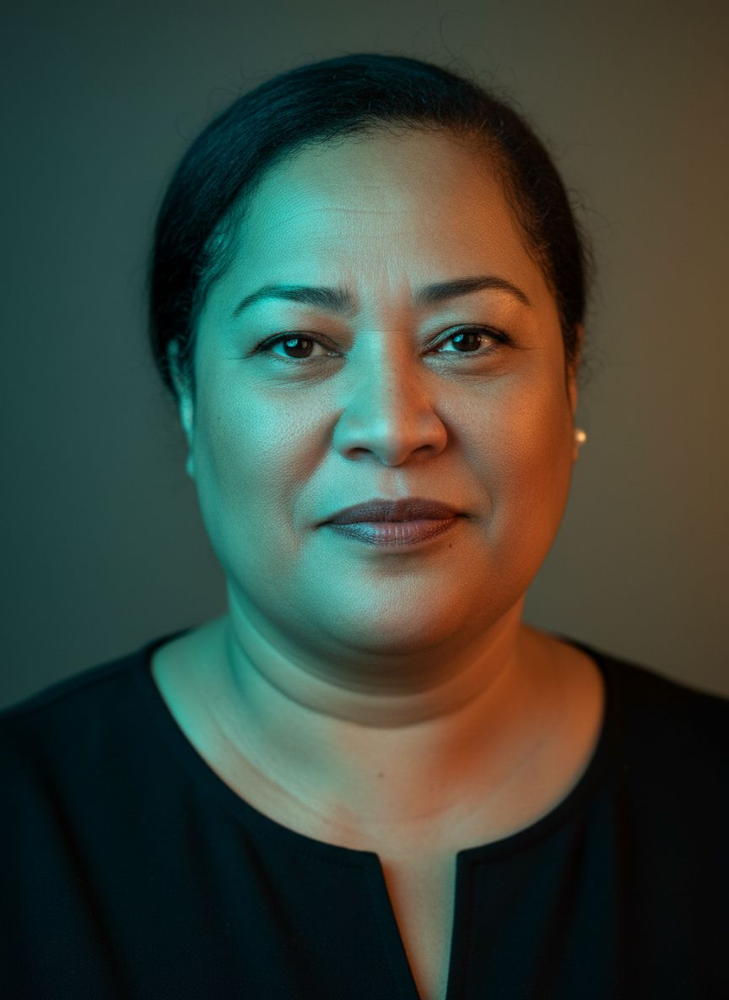

Hi, my name is
Data and Reporting Officer specialising in NCD surveillance, database development, and regional health data capacity building across all 22 Pacific Island Countries and Territories. Currently exploring Generative AI for Work & Research.
Hello! My name is Nola and I enjoy transforming complex health data into actionable insights for Pacific communities. My journey in public health data started over a decade ago, and I've developed deep expertise in NCD surveillance systems across the Pacific region.
I am the Data and Reporting Officer (NCD) at the Pacific Community (SPC) in Suva, Fiji. My core focus is database development, data visualisation, and strengthening national NCD data capacity through hands-on technical support and training.
I hold an MPH in Biostatistics. I'm currently exploring how Generative AI can enhance reporting methodologies, automate literature reviews, and accelerate health data communication across the Pacific.
Technologies & tools I work with:

Suva, Fiji · Current
Active modules and projects from The GRAPH Courses' Generative AI for Work & Research cohort.
MODULE 01
Created a professional portfolio website using no-code AI tools. Formatted documents efficiently and styled them into a deployable portfolio.
MODULE 02
Processed health datasets transparently and visualised results responsibly. Built automated dashboards and batch file conversion workflows.
MODULE 03
Implemented text classification, sentiment analysis, and designed automated summarisation workflows for rapid Pacific health literature reviews.
MODULE 04
Built a custom interactive chatbot using RAG architecture to support Pacific NCD data knowledge management and task assistance.
MODULE 05
Designed responsible AI agents to monitor health literature and orchestrated app-to-app workflows to reduce time on repetitive research tasks.
Interested in how Generative AI can support your organisation's data and public health work? Fill out the form below and I'll be in touch with tailored insights for your context.